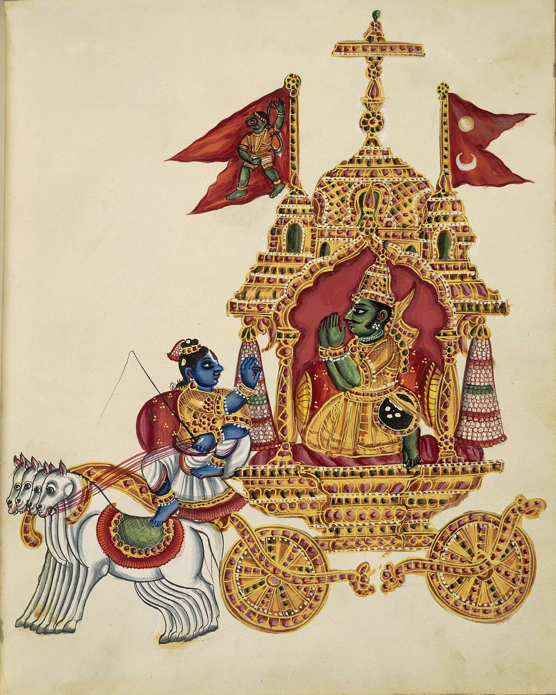

Chapter 3: Karma Yoga and Bhakti Yoga¶
Bhagavad Gītā 3.19
tasmād asaktaḥ satataṃ kāryaṃ karma samācara
asakto hy ācaran karma param āpnoti pūruṣaḥ
Therefore, always perform action that must be done, without attachment.
For by performing action without attachment, one attains the Supreme.
Part A: Karma Yoga — The Path of Selfless Action
3.1 The Meaning of Karma Yoga¶
Karma Yoga is the discipline of acting without attachment to results (phala): one performs one’s duties (svadharma) and offers the action to God, so that ordinary activity becomes a means of liberation rather than a cause of bondage. The word karma, from the root kṛ (“to do”), means action and, by extension, ritual action and the consequences of action. The idea answered a problem that the renunciant traditions had made acute. If action binds the self to rebirth, as Buddhists, Jains and the Upaniṣadic renouncers taught, must the seeker of liberation abandon the world? The Gītā’s answer is that bondage comes not from action but from desire for its fruits.
Definition: Karma Yoga
Karma Yoga is the discipline of performing all actions as an offering to the Divine, without attachment to their fruits, maintaining equanimity in success and failure, and thereby purifying the mind and attaining liberation through action itself.
3.2 The Bhagavad Gītā and Karma Yoga¶
The Bhagavad Gītā, part of the Bhīṣma Parva of the Mahābhārata and probably composed between the 2nd century BCE and the 2nd century CE (Malinar 2007), is the foremost scripture of Karma Yoga. Kṛṣṇa’s teaching to Arjuna on the battlefield of Kurukṣetra is the classic exposition of selfless action in Indian thought, and every major school of Vedānta commented on it; Śaṅkara’s commentary, the oldest to survive, is available in Gambhirananda’s translation (Śaṅkarācārya 1997).
3.2.1 The Dilemma of Arjuna¶
The Gītā opens with Arjuna’s crisis: faced with the prospect of fighting against his own kinsmen, teachers, and elders, the great warrior is overwhelmed with grief and confusion. He throws down his bow and declares that he will not fight. It is in response to this existential crisis that Kṛṣṇa unfolds the teaching of Karma Yoga (Figure 3.1).


3.2.2 Key Teachings on Karma Yoga¶
Gītā 2.47 — The Cardinal Verse of Karma Yoga
karmaṇy evādhikāras te mā phaleṣu kadā cana
mā karma-phala-hetur bhūr mā te saṅgo'stv akarmaṇi
Your right is to action alone, never to its fruits.
Let not the fruit of action be your motive, nor let your attachment be to inaction.
This is perhaps the most quoted verse of the Gītā. It is built of negations: the agent has no claim to the fruits, must not let them be his motive, and must not, for all that, fall back on inaction. The next verse defines yoga itself in these terms, as equanimity:
Gītā 2.48 — Yoga as Equanimity
yoga-sthaḥ kuru karmāṇi saṅgaṃ tyaktvā dhanaṃjaya
siddhy-asiddhyoḥ samo bhūtvā samatvaṃ yoga ucyate
Established in Yoga, perform actions, O Dhanañjaya, abandoning attachment,
remaining equal in success and failure. This equanimity is called Yoga.
Gītā 3.9 — Action as Sacrifice
yajñārthāt karmaṇo'nyatra loko'yaṃ karma-bandhanaḥ
tad-arthaṃ karma kaunteya mukta-saṅgaḥ samācara
The world is bound by actions other than those performed as sacrifice.
Therefore, O son of Kuntī, perform action for that purpose, free from attachment.
3.2.3 Niṣkāma Karma: Desireless Action¶
The later tradition summed up this teaching as niṣkāma karma, action without desire for personal gain, and contrasted it with sakāma karma, action driven by desire. The first is done as duty, service or an offering to God; its agent regards himself as an instrument rather than the doer and stays equal in success and failure; and it leads to liberation. The second is done for reward, binds its agent to the outcome, breeds anxiety and leads to further rebirth. The Gītā’s own image for desireless action is sacrifice: action done as an offering does not bind.
3.2.4 Lokasaṃgraha: Action for the Welfare of the World¶
Kṛṣṇa introduces another powerful motivation for action: lokasaṃgraha — action performed for the welfare and cohesion of the world:
Gītā 3.20–3.21
karmaṇaiva hi saṃsiddhim āsthitā janakādayaḥ
loka-saṃgraham evāpi saṃpaśyan kartum arhasi
yad yad ācarati śreṣṭhas tat tad evetaro janaḥ
sa yat pramāṇaṃ kurute lokas tad anuvartate
By action alone, Janaka and others attained perfection.
You should act with a view to the welfare of the world.
Whatever a great person does, common people follow. Whatever standard he sets, the world follows.
3.3 The Philosophy of Action and Non-Action¶
The Gītā contains a subtle and profound analysis of the nature of action:
Gītā 4.18
karmaṇy akarma yaḥ paśyed akarmaṇi ca karma yaḥ
sa buddhimān manuṣyeṣu sa yuktaḥ kṛtsna-karma-kṛt
One who sees inaction in action and action in inaction —
that person is wise among human beings, a yogi, a doer of all actions.
The commentators read this verse in the light of the Gītā’s Sāṃkhya: the self is never an agent (akartā), all action belongs to nature (prakṛti) and its constituents, and the wise person acts in the world while knowing that he does not act. For Śaṅkara the verse shows why action can never itself be the means of liberation (Chapter 4); for theistic commentators it shows how action offered to God ceases to bind.
Gītā 5.8–5.9
naiva kiṃ cit karomīti yukto manyeta tattva-vit
paśyañ śṛṇvan spṛśañ jighrann aśnan gacchan svapañ śvasan
pralapan visṛjan gṛhṇann unmiṣan nimiṣann api
indriyāṇīndriyārtheṣu vartanta iti dhārayan
The one who knows the truth thinks “I do nothing at all” — while seeing, hearing, touching, smelling, eating, walking, sleeping, breathing, speaking, releasing, grasping, opening and closing the eyes — knowing that it is only the senses interacting with their objects.
3.4 Karma, Duty and the Gītā’s Social Setting¶
Karma Yoga presupposes the doctrine of karma, which is treated with the darśanas in Volume 3, Darśana Darpaṇa. Later Vedāntic texts divide karma into three stores: the karma accumulated in past lives (sañcita); the portion of it that has begun to bear fruit in the present body (prārabdha); and the karma now being made, which will bear fruit in future (āgāmin, also called kriyamāṇa, “what is being done”). Advaita texts such as the Vivekacūḍāmaṇi teach that knowledge burns the first and the third, while the second must be exhausted by experience even by the liberated person (Chapter 4). In these terms the Karma Yogin’s desireless action adds nothing to the future store, and his equanimity lets the fructifying karma run out without new entanglement. The Gītā itself analyses every action into five factors — the body as its seat, the agent, the various instruments, the various efforts and, fifth, the unseen or divine (daiva) (18.14) — so that the self, which is none of these, is not the doer.
3.4.1 Svadharma: One’s Own Duty¶
Central to the Gītā’s teaching on action is svadharma, the duty that falls to a person by nature (svabhāva) and station:
Gītā 3.35
śreyān sva-dharmo viguṇaḥ para-dharmāt sv-anuṣṭhitāt
sva-dharme nidhanaṃ śreyaḥ para-dharmo bhayāvahaḥ
Better is one’s own dharma, though imperfectly performed, than the dharma of another well performed. Death in one’s own dharma is better; the dharma of another is fraught with danger.
In the Gītā’s own context, svadharma is the duty of one’s varṇa: Arjuna must fight because he is a kṣatriya, and the text states that the four varṇas were created by Kṛṣṇa according to quality and action (4.13) and lists the duties proper to each (18.41–48). This aspect of the text has been read in sharply different ways. B.R. Ambedkar saw the Gītā as a defence of the caste order and of brahmanical orthodoxy (Ambedkar 1987). Modern Hindu interpreters such as Tilak, Aurobindo and Gandhi instead read svadharma as one’s individual nature and vocation (Section 3.13), and many devotional traditions stressed the verse that opens the highest goal to women, vaiśyas and śūdras who take refuge in Kṛṣṇa (9.32). The same verse contains the compound pāpayonayaḥ, “of sinful birth”. On one construal, which many translators follow, it describes the women, vaiśyas and śūdras; on another, it names a further group, “even those of sinful birth”, alongside them (Malinar 2007). Either way, the verse opens the path while reflecting the hierarchy it addressed, and a reader should recognise both the social setting of the teaching and the universalising readings it has inspired. Read in the second way, the Karma Yogin is called to perform the duties that fall to him or her — as parent, teacher, farmer, artist or official — with skill and without selfish motive.
Part B: Bhakti Yoga — The Path of Divine Love
3.5 The Meaning of Bhakti¶
Bhakti is derived from the Sanskrit root bhaj, “to share in”, “to partake”, and hence “to serve, worship, love”. Bhakti Yoga is the discipline of devotion to a personal God, cultivated until it becomes complete surrender. In the Gītā it is one of the forms that yoga takes; in the later devotional traditions the relation was often reversed, and yoga became one of the forms, or one of the rivals, of devotion.
Nārada Bhakti Sūtra 2
sā tv asmin para-prema-rūpā
That (Bhakti) is of the nature of supreme love for God.
Nārada Bhakti Sūtra 3–4
amṛta-svarūpā ca
yal labdhvā pumān siddho bhavaty amṛto bhavati tṛpto bhavati
It is of the nature of immortal bliss.
Having obtained it, a person becomes perfected, immortal, and completely satisfied.
3.6 Bhakti in the Bhagavad Gītā¶
The Bhagavad Gītā, particularly Chapters 9 and 12, contains some of the most moving teachings on Bhakti Yoga:
Gītā 9.26
patraṃ puṣpaṃ phalaṃ toyaṃ yo me bhaktyā prayacchati
tad ahaṃ bhakty-upahṛtam aśnāmi prayatātmanaḥ
Whoever offers Me with devotion a leaf, a flower, a fruit, or water —
that offering of devotion from the pure-hearted I accept.
Gītā 9.34
man-manā bhava mad-bhakto mad-yājī māṃ namaskuru
mām evaiṣyasi yuktvaivam ātmānaṃ mat-parāyaṇaḥ
Fix your mind on Me, be devoted to Me, sacrifice to Me, bow to Me.
Absorbed in Me, with Me as your supreme goal, you shall come to Me.
Gītā 18.65–18.66 — The Supreme Secret
man-manā bhava mad-bhakto mad-yājī māṃ namaskuru
mām evaiṣyasi satyaṃ te pratijāne priyo'si me
sarva-dharmān parityajya mām ekaṃ śaraṇaṃ vraja
ahaṃ tvāṃ sarva-pāpebhyo mokṣayiṣyāmi mā śucaḥ
Fix your mind on Me, be My devotee, sacrifice to Me, bow to Me.
Truly I promise you: you are dear to Me.
Abandoning all dharmas, take refuge in Me alone.
I shall liberate you from all sins; do not grieve.
3.7 The Navadhā Bhakti: Nine Forms of Devotion¶
The Bhāgavata Purāṇa (c. 9th–10th century CE) presents the celebrated nine-fold path of devotion (navadhā bhakti), spoken by the child-devotee Prahlāda to his father Hiraṇyakaśipu (Table 3.1):
Bhāgavata Purāṇa 7.5.23
śravaṇaṃ kīrtanaṃ viṣṇoḥ smaraṇaṃ pāda-sevanam
arcanaṃ vandanaṃ dāsyaṃ sakhyam ātma-nivedanam
Hearing, chanting, remembering, serving the feet, worshipping,
saluting, servitude, friendship, and complete self-surrender —
these are the nine forms of Bhakti to Lord Viṣṇu.
3.8 The Nārada Bhakti Sūtra¶
The Nārada Bhakti Sūtra is a celebrated treatise on the philosophy and practice of Bhakti, attributed to the celestial sage Nārada. It consists of 84 aphorisms that define, describe, and extol the path of divine love (Nārada 1943). Its date is uncertain; it draws on the Bhāgavata Purāṇa and is generally regarded as a medieval work.
3.8.1 Characteristics of Supreme Bhakti¶
Nārada Bhakti Sūtra 6–7
yaj jñātvā matto bhavati stabdho bhavaty ātmārāmo bhavati
sā na kāmayamānā nirodha-rūpatvāt
Having known which, one becomes intoxicated, stunned, and delights in the Self.
It (Bhakti) is not of the nature of desire, being of the nature of cessation (of all desires).
3.8.2 Parā and Aparā Bhakti¶
The devotional treatises distinguish a lower, preparatory devotion (aparā or gauṇī bhakti) from the supreme devotion (parā bhakti) of the Nārada Sūtra’s definition. The first is mixed with desire and expressed through ritual, vows and pilgrimage; it seeks boons and protection and fluctuates with circumstance. The second is love for its own sake, steady and spontaneous; the tradition’s examples are the cowherd women (gopīs) of Vṛndāvana and, among the saints, Mīrābāī.
3.9 The Philosophy of Divine Love in Bhakti Yoga¶
3.9.1 Rasa Theory and Bhakti¶
The Gauḍīya Vaiṣṇava tradition, following Rūpa Gosvāmī’s Bhakti-rasāmṛta-sindhu, developed an elaborate classification of devotional emotions (rasas) that the devotee can experience in relation to the Divine (Table 3.2).
| Rasa | Relationship | Exemplar | Character |
|---|---|---|---|
| Śānta | Peaceful contemplation | Sanatkumāras | Tranquil awareness of God’s presence |
| Dāsya | Servitude | Hanumān | Devoted, selfless service to the Lord |
| Sakhya | Friendship | Arjuna; Sudāmā | Intimate, playful companionship |
| Vātsalya | Parental love | Yaśodā; Nanda | Protective, nurturing affection |
| Mādhurya | Conjugal love | Rādhā; Gopīs | Intense, all-consuming divine love |
Each rasa represents a distinct mode of relating to the Divine, and the tradition holds that the devotee is naturally drawn to the rasa that corresponds to their innermost spiritual temperament. The mādhurya rasa (the mood of conjugal love) is considered the highest, as exemplified by the Gopīs of Vṛndāvana, whose love for Kṛṣṇa was so intense that it transcended all worldly attachments.
3.9.2 The Concept of Prapatti (Śaraṇāgati): Total Surrender¶
The highest expression of Bhakti is prapatti or śaraṇāgati — total, unconditional surrender to the Divine. The Śrī Vaiṣṇava tradition, drawing on the Pāñcarātra Ahirbudhnya Saṃhitā and Lakṣmī Tantra and as systematised by Vedānta Deśika (14th century), describes six components of śaraṇāgati (Table 3.3).
| Component | Sanskrit | Description |
|---|---|---|
| Resolve to please | Ānukūlya Saṃkalpa | Determination to do what is pleasing to the Lord |
| Avoidance of displeasure | Prātikūlya Varjanam | Avoidance of what is displeasing to the Lord |
| Faith in protection | Mahāviśvāsa | Firm faith that the Lord will protect |
| Prayer for protection | Goptṛtva Varaṇam | Active supplication for the Lord’s protection |
| Surrender of self | Ātma-nikṣepa | Placing oneself entirely in the Lord’s hands |
| Humility | Kārpaṇya | Awareness of one’s own helplessness |
Stotraratna of Yāmuna (Āḷavantār), 22
na dharma-niṣṭho'smi na cātma-vedī
na bhaktimāṃs tvac-caraṇāravinde
akiñcano'nanya-gatiḥ śaraṇya
tvat-pāda-mūlaṃ śaraṇaṃ prapadye
I am not established in dharma, nor do I know the Self. I have no devotion to Your lotus feet. Helpless and with no other refuge, O Lord, I surrender at Your feet.
3.10 Devotion and Yoga in the Bhakti Movements¶
From the sixth century onwards devotional poetry in the regional languages transformed Indian religion: the Tamil Āḻvārs and Nāyaṉārs (6th–9th centuries), the Vīraśaiva vacana poets of twelfth-century Karnataka, the Vārkārīs of Maharashtra from Jñāneśvar and Nāmdev to Tukārām, the Sants of North India such as Kabīr and Ravidās, the Kṛṣṇa devotion of Sūrdās, Mīrābāī and Caitanya, and Śaṅkaradeva in Assam. Their literature is treated in Volume 8, Kāvya Kalpalatā; what matters here is how they related to yoga.
Three attitudes can be distinguished. The first subordinated yoga to devotion. The Bhāgavata Purāṇa keeps the eight limbs but turns meditation into loving remembrance, and in its eleventh book Kṛṣṇa calls the yogic powers distractions (Chapter 1, Section 1.5.3); the Gauḍīya theologians went further and held that the pure devotee does not even desire liberation. The second absorbed yoga into devotion. Jñāneśvar (13th century), who traced his lineage to the Nāth gurus, wrote a famous account of kuṇḍalinī in Marathi inside his commentary on the Gītā (Chapter 7, Section 7.16), and the Sants of North India, like the Sikh Gurus, used the vocabulary of Nāth yoga — the unstruck sound, the tenth door, the state of natural ease (sahaj) — for the fruits of devotion to the divine name. The third treated the yogi as a rival. Kabīr mocks the yogi’s earrings, ashes and matted hair as outward show. Patton Burchett has argued that the rise of Rāmānandī and Kṛṣṇa devotion in early modern North India was shaped by its competition with Tantric and Nāth yoga: devotional authors from Nābhādās, whose Bhaktamāl (c. 1600) is the great hagiography of the movement, onwards presented bhakti as respectable, open to all and morally superior to the power-seeking yogi and the Tantric worshipper (Burchett 2019). In the Tamil country, by contrast, the Śaiva devotional canon itself came to include a great yoga text, Tirumūlar’s Tirumantiram (Chapter 5, Section 5.8).
3.11 Bhakti and Society¶
Bhakti as a Universal Path — and Its Limits
Bhakti teachers repeatedly declared that devotion is open to all, regardless of caste, gender or learning. The Gītā (9.32) already promises the highest goal to women, vaiśyas and śūdras who take refuge in Kṛṣṇa (on a common reading, while still calling them “of sinful birth”; Section 3.4), and the vernacular saint-poets — among them women such as Āṇṭāḷ, Akka Mahādevi and Mīrābāī, and low-caste or untouchable saints such as Cokhāmeḷā and Ravidās — composed in the languages of ordinary people rather than Sanskrit.
Historians caution, however, against treating Bhakti as a straightforward social revolution. The equality proclaimed in devotion often coexisted with caste practice in daily life: Cokhāmeḷā was revered as a saint yet barred from the Paṇḍharpur temple, and his poems lament this exclusion. Some movements, notably the Vīraśaivas of 12th-century Karnāṭaka, did attack caste directly; others reinforced brahmanical norms. The radical voices of Bhakti are best read as a sustained protest within the caste order rather than as its abolition (Hawley 2015).
3.12 The Integration of Karma and Bhakti¶
Karma Yoga and Bhakti Yoga are complementary rather than separate disciplines. The Gītā teaches that the highest form of Karma Yoga is Bhakti — action performed as an offering to God, motivated not by duty alone but by love:
Gītā 9.27
yat karoṣi yad aśnāsi yaj juhoṣi dadāsi yat
yat tapasyasi kaunteya tat kuruṣva mad-arpaṇam
Whatever you do, whatever you eat, whatever you offer in sacrifice,
whatever you give, whatever austerity you perform, O son of Kuntī —
do that as an offering to Me.
Action offered in love loses its power to bind, and devotion expressed as service becomes action. The theistic commentators, above all Rāmānuja, read the Gītā as teaching that both culminate in a devotion that is itself a form of knowledge, a steady and loving remembrance of God (Chapter 4).
3.13 Modern Readings of Karma Yoga¶
In the late nineteenth and twentieth centuries Karma Yoga became the most politically consequential of the yogas. Vivekānanda’s Karma Yoga (1896) made selfless work, and service of the poor as service of God, the spiritual practice of the householder; the Ramakrishna Mission’s relief work was its institutional form. Bal Gangadhar Tilak, writing in Mandalay jail, argued in his Gītā Rahasya (1915) that the Gītā teaches energetic action in the world, not renunciation, and he rejected the Advaita reading that subordinated action to knowledge. Aurobindo’s Essays on the Gita, serialised between 1916 and 1920, read it as a synthesis of works, knowledge and devotion, the germ of his own integral yoga (Chapter 11, Section 11.4.3). Gandhi, who called his Gujarati rendering of the Gītā Anāsaktiyoga, “the yoga of non-attachment”, made desireless action the basis of a politics of non-violence and read the battle of Kurukṣetra as an allegory of the inner struggle. These readings were contested in their turn: Ambedkar’s criticism of the Gītā’s defence of varṇa (Section 3.4) was aimed partly at them. They show that the Gītā’s yoga of action, like Patañjali’s yoga of stillness, has been reinterpreted in every age.